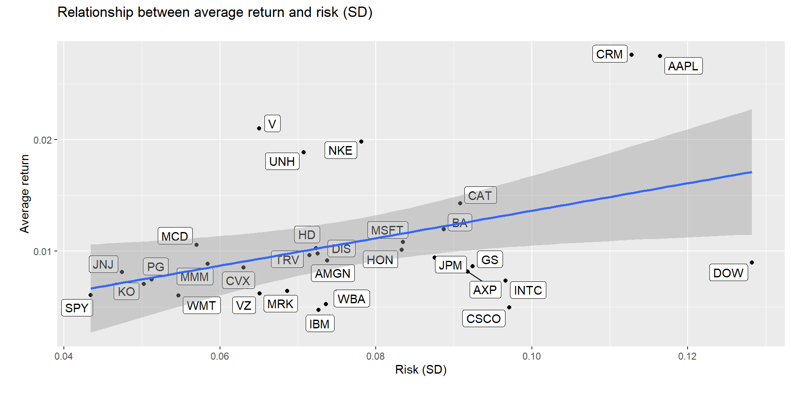

In this blog, I will showcase my analysis of stock returns and their distributions as part of the Data Analytics for Finance course at London Business School.
We will use the tidyquant package to download historical data of stock prices, calculate returns, and examine the distribution of returns.
We must first identify which stocks we want to download data for, and for this we must know their ticker symbol; Apple is known as AAPL, Microsoft as MSFT, McDonald’s as MCD, etc. The file nyse.csv contains 508 stocks listed on the NYSE, their ticker symbol, name, the IPO (Initial Public Offering) year, and the sector and industry the company is in.
# import data
nyse <- read_csv(here::here("data", "nyse.csv"))- Based on this dataset, we create a table and a bar plot that shows the number of companies per sector, in descending order
#import required libraries
library(tidyquant)
# table transformation
table_nyse <- nyse %>%
group_by(sector) %>%
summarise(sector_count=count(sector)) %>%
arrange(desc(sector_count))
# print table
table_nyse %>%
kbl(col.names = c("Sector", "Count")) %>%
kable_classic(c("hover"), full_width = F, html_font = "Cambria") %>%
kable_styling()| Sector | Count |
|---|---|
| Finance | 97 |
| Consumer Services | 79 |
| Public Utilities | 60 |
| Capital Goods | 45 |
| Health Care | 45 |
| Energy | 42 |
| Technology | 40 |
| Basic Industries | 39 |
| Consumer Non-Durables | 31 |
| Miscellaneous | 12 |
| Transportation | 10 |
| Consumer Durables | 8 |
# create ggplot bar chart
ggplot(table_nyse, aes(x=reorder(sector, sector_count), y=sector_count)) +
geom_bar(stat="identity")+
coord_flip() +
theme_economist() +
theme(legend.position = "none",
axis.title.x = element_text()) +
labs(title = "The finance sector counts the most listed companies\n",
subtitle = "Number of listed companies by sector\n",
x = "Sector\n",
y = "\nNumber of companies")Next, let’s choose the Dow Jones Industrial Aveareg (DJIA) stocks and their ticker symbols and download some data. Besides the thirty stocks that make up the DJIA, we will also add SPY which is an SP500 ETF (Exchange Traded Fund).
# define source url
djia_url <- "https://en.wikipedia.org/wiki/Dow_Jones_Industrial_Average"
#get tables that exist on URL
tables <- djia_url %>%
read_html() %>%
html_nodes(css="table")
# parse HTML tables into a dataframe called djia.
# Use purr::map() to create a list of all tables in URL
djia <- map(tables, . %>%
html_table(fill=TRUE)%>%
clean_names())
# constituents
table1 <- djia[[2]] %>% # the second table on the page contains the ticker symbols
mutate(date_added = ymd(date_added),
# if a stock is listed on NYSE, its symbol is, e.g., NYSE: MMM
# We will get prices from yahoo finance which requires just the ticker
# if symbol contains "NYSE*", the * being a wildcard
# then we jsut drop the first 6 characters in that string
ticker = ifelse(str_detect(symbol, "NYSE*"),
str_sub(symbol,7,11),
symbol)
)
# we need a vector of strings with just the 30 tickers + SPY
tickers <- table1 %>%
select(ticker) %>%
pull() %>% # pull() gets them as a sting of characters
c("SPY")# %>% # and lets us add SPY, the SP500 ETF# Notice the cache=TRUE argument in the chunk options. Because getting data is time consuming, # cache=TRUE means that once it downloads data, the chunk will not run again next time you knit your Rmd
myStocks <- tickers %>%
tq_get(get = "stock.prices",
from = "2000-01-01",
to = "2020-08-31") %>%
group_by(symbol)
glimpse(myStocks) # examine the structure of the resulting data frame## Rows: 153,121
## Columns: 8
## Groups: symbol [31]
## $ symbol <chr> "MMM", "MMM", "MMM", "MMM", "MMM", "MMM", "MMM", "MMM", "M...
## $ date <date> 2000-01-03, 2000-01-04, 2000-01-05, 2000-01-06, 2000-01-0...
## $ open <dbl> 48.0, 46.4, 45.6, 47.2, 50.6, 50.2, 50.4, 51.0, 50.7, 50.4...
## $ high <dbl> 48.2, 47.4, 48.1, 51.2, 51.9, 51.8, 51.2, 51.8, 50.9, 50.5...
## $ low <dbl> 47.0, 45.3, 45.6, 47.2, 50.0, 50.0, 50.2, 50.4, 50.2, 49.5...
## $ close <dbl> 47.2, 45.3, 46.6, 50.4, 51.4, 51.1, 50.2, 50.4, 50.4, 49.7...
## $ volume <dbl> 2173400, 2713800, 3699400, 5975800, 4101200, 3863800, 2357...
## $ adjusted <dbl> 28.1, 26.9, 27.7, 30.0, 30.5, 30.4, 29.9, 30.0, 30.0, 29.5...Financial performance analysis depend on returns; If I buy a stock today for 100 and I sell it tomorrow for 101.75, my one-day return, assuming no transaction costs, is 1.75%. So given the adjusted closing prices, our first step is to calculate daily and monthly returns.
#calculate daily returns
myStocks_returns_daily <- myStocks %>%
tq_transmute(select = adjusted,
mutate_fun = periodReturn,
period = "daily",
type = "log",
col_rename = "daily_returns",
cols = c(nested.col))
#calculate monthly returns
myStocks_returns_monthly <- myStocks %>%
tq_transmute(select = adjusted,
mutate_fun = periodReturn,
period = "monthly",
type = "arithmetic",
col_rename = "monthly_returns",
cols = c(nested.col))
#calculate yearly returns
myStocks_returns_annual <- myStocks %>%
group_by(symbol) %>%
tq_transmute(select = adjusted,
mutate_fun = periodReturn,
period = "yearly",
type = "arithmetic",
col_rename = "yearly_returns",
cols = c(nested.col))- We create a dataframe and assign it to a new object, where we summarise monthly returns since 2017-01-01 for each of the stocks and SPY; min, max, median, mean, SD.
# table transformation and extraction of monthly returns
summarised_returns <- myStocks_returns_monthly %>%
group_by(symbol) %>%
summarise(r_min=min(monthly_returns), r_max=max(monthly_returns), r_median=median(monthly_returns), r_mean=mean(monthly_returns), r_sd=sd(monthly_returns))
# print table
summarised_returns %>%
kbl(col.names = c("Ticker", "Min return", "Max return", "Median return", "Avg. return", "SD return")) %>%
kable_classic(c("hover"), full_width = F, html_font = "Cambria") %>%
kable_styling()| Ticker | Min return | Max return | Median return | Avg. return | SD return |
|---|---|---|---|---|---|
| AAPL | -0.577 | 0.454 | 0.035 | 0.028 | 0.116 |
| AMGN | -0.170 | 0.328 | 0.010 | 0.009 | 0.074 |
| AXP | -0.279 | 0.875 | 0.010 | 0.008 | 0.092 |
| BA | -0.458 | 0.257 | 0.018 | 0.012 | 0.089 |
| CAT | -0.353 | 0.350 | 0.013 | 0.014 | 0.091 |
| CRM | -0.360 | 0.403 | 0.021 | 0.028 | 0.113 |
| CSCO | -0.367 | 0.389 | 0.013 | 0.005 | 0.097 |
| CVX | -0.224 | 0.270 | 0.012 | 0.009 | 0.063 |
| DIS | -0.268 | 0.234 | 0.011 | 0.010 | 0.073 |
| DOW | -0.276 | 0.255 | 0.046 | 0.009 | 0.128 |
| GS | -0.275 | 0.312 | 0.015 | 0.009 | 0.092 |
| HD | -0.206 | 0.223 | 0.015 | 0.010 | 0.072 |
| HON | -0.384 | 0.511 | 0.016 | 0.010 | 0.083 |
| IBM | -0.237 | 0.354 | 0.006 | 0.005 | 0.073 |
| INTC | -0.445 | 0.338 | 0.012 | 0.007 | 0.097 |
| JNJ | -0.160 | 0.174 | 0.009 | 0.008 | 0.047 |
| JPM | -0.281 | 0.255 | 0.011 | 0.009 | 0.088 |
| KO | -0.167 | 0.142 | 0.011 | 0.007 | 0.050 |
| MCD | -0.257 | 0.183 | 0.015 | 0.011 | 0.057 |
| MMM | -0.150 | 0.207 | 0.012 | 0.009 | 0.058 |
| MRK | -0.260 | 0.208 | 0.010 | 0.006 | 0.069 |
| MSFT | -0.344 | 0.408 | 0.017 | 0.011 | 0.083 |
| NKE | -0.375 | 0.435 | 0.023 | 0.020 | 0.078 |
| PG | -0.354 | 0.119 | 0.010 | 0.007 | 0.051 |
| SPY | -0.165 | 0.127 | 0.011 | 0.006 | 0.043 |
| TRV | -0.259 | 0.539 | 0.013 | 0.010 | 0.071 |
| UNH | -0.306 | 0.266 | 0.023 | 0.019 | 0.071 |
| V | -0.196 | 0.338 | 0.026 | 0.021 | 0.065 |
| VZ | -0.210 | 0.393 | 0.003 | 0.006 | 0.065 |
| WBA | -0.193 | 0.246 | 0.002 | 0.005 | 0.074 |
| WMT | -0.181 | 0.160 | 0.006 | 0.006 | 0.055 |
- We plot a density plot, using geom_density(), for each of the stocks
# create table with SD returns in descending order to observe riskiest stock
summarised_returns %>%
arrange(desc(r_sd)) %>%
kbl(col.names = c("Ticker", "Min return", "Max return", "Median return", "Avg. return", "SD return")) %>%
kable_classic(c("hover"), full_width = F, html_font = "Cambria") %>%
kable_styling()| Ticker | Min return | Max return | Median return | Avg. return | SD return |
|---|---|---|---|---|---|
| DOW | -0.276 | 0.255 | 0.046 | 0.009 | 0.128 |
| AAPL | -0.577 | 0.454 | 0.035 | 0.028 | 0.116 |
| CRM | -0.360 | 0.403 | 0.021 | 0.028 | 0.113 |
| CSCO | -0.367 | 0.389 | 0.013 | 0.005 | 0.097 |
| INTC | -0.445 | 0.338 | 0.012 | 0.007 | 0.097 |
| GS | -0.275 | 0.312 | 0.015 | 0.009 | 0.092 |
| AXP | -0.279 | 0.875 | 0.010 | 0.008 | 0.092 |
| CAT | -0.353 | 0.350 | 0.013 | 0.014 | 0.091 |
| BA | -0.458 | 0.257 | 0.018 | 0.012 | 0.089 |
| JPM | -0.281 | 0.255 | 0.011 | 0.009 | 0.088 |
| MSFT | -0.344 | 0.408 | 0.017 | 0.011 | 0.083 |
| HON | -0.384 | 0.511 | 0.016 | 0.010 | 0.083 |
| NKE | -0.375 | 0.435 | 0.023 | 0.020 | 0.078 |
| AMGN | -0.170 | 0.328 | 0.010 | 0.009 | 0.074 |
| WBA | -0.193 | 0.246 | 0.002 | 0.005 | 0.074 |
| IBM | -0.237 | 0.354 | 0.006 | 0.005 | 0.073 |
| DIS | -0.268 | 0.234 | 0.011 | 0.010 | 0.073 |
| HD | -0.206 | 0.223 | 0.015 | 0.010 | 0.072 |
| TRV | -0.259 | 0.539 | 0.013 | 0.010 | 0.071 |
| UNH | -0.306 | 0.266 | 0.023 | 0.019 | 0.071 |
| MRK | -0.260 | 0.208 | 0.010 | 0.006 | 0.069 |
| VZ | -0.210 | 0.393 | 0.003 | 0.006 | 0.065 |
| V | -0.196 | 0.338 | 0.026 | 0.021 | 0.065 |
| CVX | -0.224 | 0.270 | 0.012 | 0.009 | 0.063 |
| MMM | -0.150 | 0.207 | 0.012 | 0.009 | 0.058 |
| MCD | -0.257 | 0.183 | 0.015 | 0.011 | 0.057 |
| WMT | -0.181 | 0.160 | 0.006 | 0.006 | 0.055 |
| PG | -0.354 | 0.119 | 0.010 | 0.007 | 0.051 |
| KO | -0.167 | 0.142 | 0.011 | 0.007 | 0.050 |
| JNJ | -0.160 | 0.174 | 0.009 | 0.008 | 0.047 |
| SPY | -0.165 | 0.127 | 0.011 | 0.006 | 0.043 |
# create ggplot based on monthly returns
ggplot(myStocks_returns_monthly, aes(x=monthly_returns, color=symbol)) +
geom_density() +
theme(axis.title.x = element_text()) +
labs(title = "Standard deviation of monthly returns against average return\n",
x = "Monthly returns\n",
y = "\nAverage return")Generally, the monthly returns are normally distributed around 0. Stocks with a low standard deviation of monthly returns show a high peak in the plot and are therefore considered less risky. On the other hand, stocks which have strongly deviating returns from month to month show a more spread out bell shape and thus are considered more risky. More specifically, DOW and AAPL are among the riskiest stocks while JNJ and SPY bear the least risk.
- Finally, we produce a plot that shows the expected monthly return (mean) of a stock on the Y axis and the risk (standard deviation) in the X-axis. We use ggrepel::geom_text_repel() to label each stock with its ticker symbol
# create ggplot with trend line indicating the expected relationship between risk and return
ggplot(summarised_returns, aes(label=symbol, x=r_sd, y=r_mean)) +
geom_point() +
ggrepel::geom_label_repel(mapping = NULL, data = NULL, stat = "identity",
position = "identity") +
geom_smooth(method='lm', formula= y~x) +
theme(axis.title.x = element_text()) +
labs(title = "Relationship between average return and risk (SD)\n",
x = "Risk (SD)\n",
y = "\nAverage return")
DOW is the riskiest stock but it has a comparably low return. This does not fit the general relationship between risk and return.